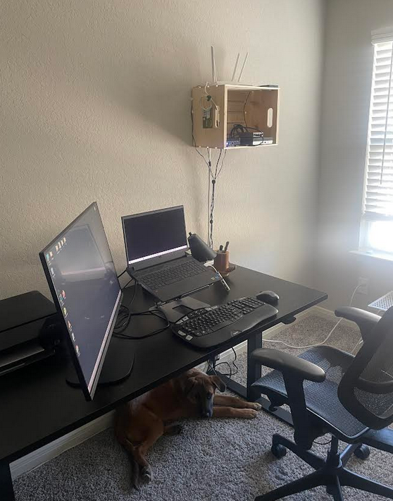
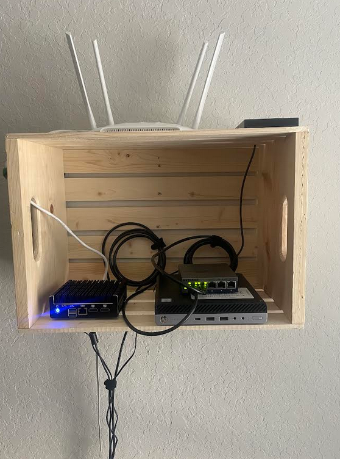
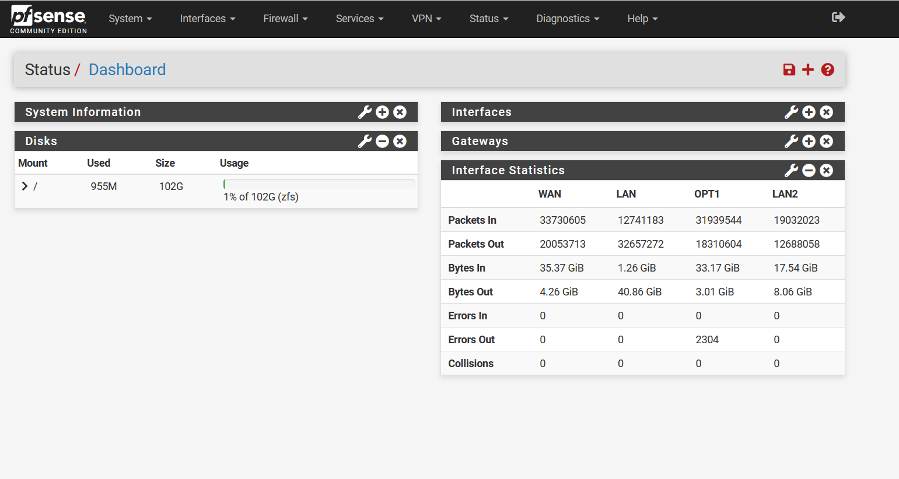
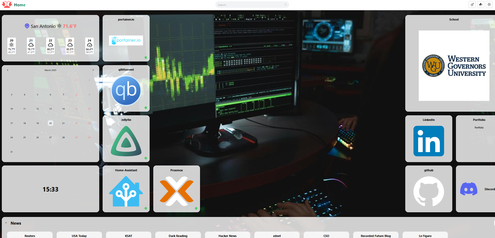
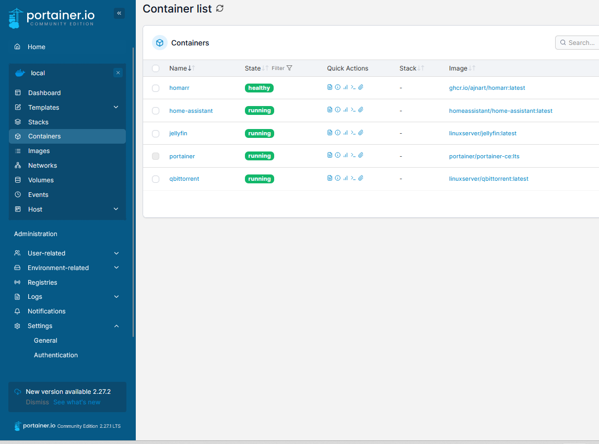
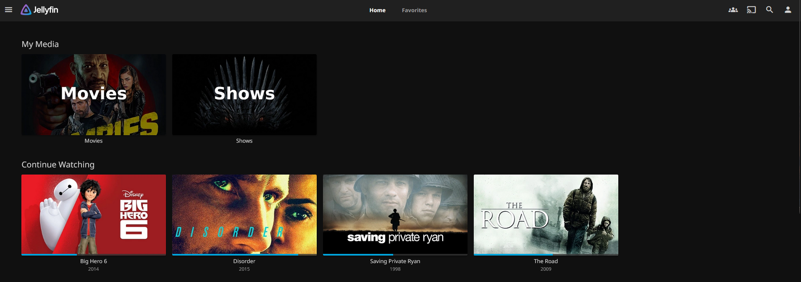

I enjoy playing around with various technologies in my home lab, doing some casual programming, and generally just
breaking things and fixing them. I guess this site counts as a side-project, with the caveat that I make no claims
of being a web developer. My site here is obviously simple. Just HTML and CSS.
Home Lab
This is my current setup in my office. I've made an active effort to downsize everything as much as possible.
Little heat, no noise. And my puppy Lou. Under my desk. Always.


My network runs through ATT fiber, with the 5Gb downlink configured in IP passthrough mode, as ATT doesn't support true bridging.
CAT6 runs from the ATT fiber router downstairs to my office upstairs, connecting to my protectli minivault (left) running
pfSense over a wireguard VPN. pfSense community from Netgate is open source, easy to use, and awesome. I've run my home network on it for a few years and
have no plans to change. Google fiber and some other options have become available recently, so I may explore in the near future how I can ditch this ATT brick.

To the right are a managed Netgear switch and an HP EliteDesk 800 G3 Mini that I picked up for around $100 to replace my old (and noisy) desktop server. I have been
pretty impressed with it and I am considering buying a few more to cluster.
On top you can see my LAN access point and a 2TB SSD that I have configured on a NFS for machine backups and extra media storage. I have been tempted to invest in a
new NAS, but honestly my family and I just don't watch enough movies and shows to justify it. I just want it.
My home server (HP EliteDesk) runs on Fedora linux VM on top of proxmox. My home dashboard is configured with homarr. Its a great simple to use home dashboard with web GUI design customization (https://homarr.dev/). I don't have highly specific needs,
so it saves me the time of having to hand-jam everything in a yaml file.
You can see the services I'm running below. It's pretty simple, and all are run in docker containers managed through portainer.

I've gone through a bit of an
evolution for my home services. Once upon a time, I had a mixture of multiple vms with services scattered between them. As I became more familiar with containers,
I began to rely pretty heavily on them for everything I do. Personally, for my uses, I prefer not having to worry about interactions between services, and if something breaks,
it breaks in a container and it is a quick troubleshoot. I've used a mixture of Docker and Podman, Docker Compose for the libraries, and now manage all containers with
portainer (https://www.portainer.io/). It's a great tool for managing containers, and I'm glad I switched. It has a great simple web GUI and keeps things nice
and organized.

qBittorrent works well and Home Assistant covers all my home automation, though I did have to use integration for Samsung SmartThings to get around some
issues integrating certain devices. I am slowly upgrading my IOT/smart home devices so I can have more granular control.
Last but not least, the most used service: Jellyfin. Easy to use open source media server. I used Plex for quite a while, but I really do prefer Jellyfin at
this point. Simple, stable, and I've had better performance overall.
